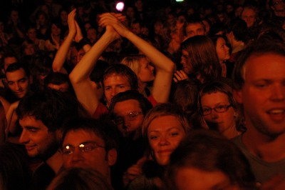
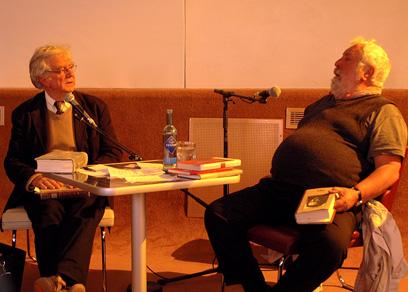
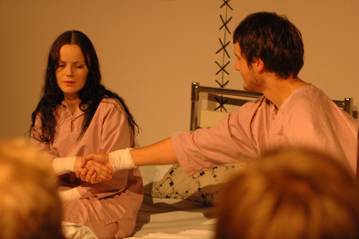
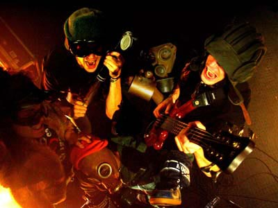
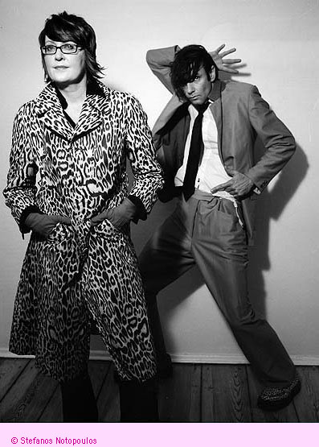
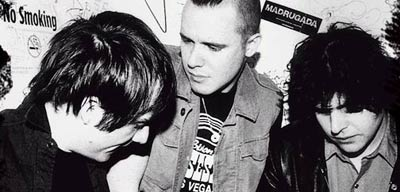
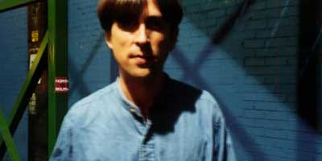

Mars 10, 2006
Phonofestivalen vinner BRAK-pris!
BRAK (Bergens Rockaktører) og Radisson SAS Hotellene har for tredje år
på rad delt ut priser til kulturaktører i Bergen. Seks lokale
journalister kåret Phonofestivalen til årets festival!
Prisen innebærer 10 000 i hotell ved SAS Hotellene som vil være med å
gjøre festivalen i september enda bedre.
Du kan lese mer ved å trykke på denne lenken.
Mars 02, 2006
Phonofestivalen er tilbake i September,
nytt styre er på plass.
Styret er i full sving med å gi deg alternativ og ny musikk, samt å
avvikle et variert og spennende samfunn/kulturprogram som ser på
festivalens tema som i år blir Flesk!
Ny festivalsjef, Aimar Alkholt, studerer utviklingstudier ved
Samfunnsvitenskapelig fakultet og var Nestleder/økonomisjef under
forrige festival. Aimar har svært lang fartstid fra Studentradioen i Bergen som teknisk redaktør og kulturjournalist. Han er forøvrig asfaltgutt fra Bergen.
Bookingsjef, Hilde Fidje, studerer Historie ved Historisk Filosofisk
fakultet. Hun er musikkjournalist i Studentradioen. Hilde var bookingsjef også under forrige festival og kommer
fra det fargerike stedet Froland.
PR sjef, Eirik Meling, er tidligere nyhetsredaktør i Studvest. Han
holder på med sin master i Sammenlignende Politikk og er født i
Wormedal utenfor Haugesund.
Samfunn og Kultursjef, Heidi Bøhagen, studerer litteraturvitenskap ved
Historisk Filosofisk fakultet, og var tidligere litteraturjournalist i Studentradioen. Heidi er vaskeekte Oslojente fra Slemmestad.
Mer praktisk informasjon finner du under kontakt
Følg med for nye oppdateringer!
Oktober 02, 2005
Bilder fra dine favorittkonserter

Dyktige fotografer har knipset en bunke av høstens beste konserter i Bergen. Sjekk bildene fra din favorittkonsert på festivalfoto.no.Oktober 01, 2005
Et møte mellom vise menn

Jan Erik Vold og Georg Johannesen i samtale om Gunvor HofmoSeptember 30, 2005
Doug Hoekstra avlyst!
Phonofestivalen beklager å måtte melde at Doug Hoekstra har meldt avbud. Sykdom i familien gjorde at Doug måtte avlyse sin europaturne.Dette var en konsert vi alle har sett frem til, og det er derfor selvsagt trist. I stedet blir Unknown Joe, Bergens egen folk/country-mann, satt opp i Storelosjen sammen med The Owens og Andreas Segrov.
September 29, 2005
Stinn brakke på Kvarteret
 Den gode stemningen lot ikke vente på seg da elektronikaprogrammet "Klubbhuset" på Studentradioen ga publikummet på Kvarteret Tøyen, Stereo Total og Dj Mikal Telle og Dj Asel.
Den gode stemningen lot ikke vente på seg da elektronikaprogrammet "Klubbhuset" på Studentradioen ga publikummet på Kvarteret Tøyen, Stereo Total og Dj Mikal Telle og Dj Asel.
Foto: Festivalfoto.no
Programmet for Landmark på lørdag er klart
Phonofestivalen gir deg elektronika på Landmark på lørdag. I samarbeid med Transformator og Fredriks Wonderful Evening, vil Casa Electro Novo og Me At Sea sørge for god stemning og liv på dansegulvet!
Sjekk ut Casa Electro Novo på www.casaelectronovo.com og Me At Sea på www.ekkofest.no/2004/z_meatsea.php
September 28, 2005
Sydlandsk stemning på Cafe Opera
 Bergensmusikerne i Com Brasa skapte en varm og lun stemning på en ellers kald og regntung septemberkveld i Bergen.
Bergensmusikerne i Com Brasa skapte en varm og lun stemning på en ellers kald og regntung septemberkveld i Bergen.
Foto: Festivalfoto.no
FN-foredrag avlyst
På grunn av sykdom må vi dessverre opplyse om at foredraget "FN og Reformspørsmålet – Har FN utspilt sin rolle?" er avlyst. Minner om at foredraget "Nordkorea: verdens største fengsel" går som planlagt kl 14.00 i Storelosjen, og "Østologi -østtysk nostalgi" kl 19.15 i Speilsalen.
September 27, 2005
Teaterstykket ARR - episoder fra lukket avdeling

John Inge Keskitalos bestillingsverk til Phonofestivalen heter ”Arr” og handler om møtet mellom tre pasienter på et mentalsykehus. I en stilisert scenografi gir møtene mellom hovedpersonene et fortettet bilde på noen aktuelle problemer innen psykiatrien.Foto: Festivalfoto.no
September 26, 2005
Debattene på Phonofestivalen har begynt
 Panelet i debatten om dokumentarfilmer, ”The Battle of Reality” på Magnus Barfot Kino mandag 26. september, besto av toneangivende unge regissører og filmfolk fra Skandinavia og Europa. Flere av regissørene har bidratt med filmer til konkurranseprogrammet på Nordisk Panorama, filmfestivalen med fokus på ny skandinavisk dokumentarfilm.
Panelet i debatten om dokumentarfilmer, ”The Battle of Reality” på Magnus Barfot Kino mandag 26. september, besto av toneangivende unge regissører og filmfolk fra Skandinavia og Europa. Flere av regissørene har bidratt med filmer til konkurranseprogrammet på Nordisk Panorama, filmfestivalen med fokus på ny skandinavisk dokumentarfilm.
September 24, 2005
X Makeena på spesialvisitt

Phonofestivalen har den glede å presentere den franske gruppa X Makeena som et av festivalens desidert største høydepunkt!September 23, 2005
Stereo Total på Phonofestivalen!

Onsdag 28.09 er en helt spesiell dag i Bergen: Electroclash-pop-kultheltene i Stereo Total gjester byen, Mikal Telle har bursdag, og Phonofestivalen har offesiell åpning! Du kan oppleve alt i Teglverket på Kvarteret. Der blir det åpning av Phonofestivalen, Tøyen, Stereo Total og DJ Telle og DJ Asel!! Det ligger an til en uforglemmelig fest!September 19, 2005
Phonoforspill!!
Tisrdag 20.09 kl 21.00 vil det være en forsmak på Phonofestivalen i Landmark sin hvite hall.. Phonofestivalen feirer at programmet er ferdig, avisa er trykket og at det er meget kort tid igjen til høstens store begivenhet. Her vil du kunne smuglese i festivalavisa før den er gitt ut, lytte på festivalens artister før den har startet og varme opp til en ukes fest!
På Landmark vil tre av festivalens artister ha overraskelseskonserter. Det vil være DJing, teatersmakebit og fantastisk stemning! Alle er velkommen!
September 14, 2005
Programmet har kommet!!
Nå har endelig det ferdige programmet kommet på phonofestivalens nettside! Ta en titt og skriv ned planen for hvor du skal legge løypa i uke 39. Det er ca 70 arrangementer og nærmere 50 konserter. Velg og vrak!!
Følg med på ditt nærmeste fakultet, cafe, frisør eller hva det måtte være; Programmet begynner å legges ut i dag!
September 08, 2005
The Bamboo Kids(US) erstatter Jessica Fletchers

Det er trist å måtte melde at Jessica Fletchers dessverre må avlyse konserten på Phonofestivalen. MEN... erstatningen er enda bedre!September 02, 2005
Frivillige søkes!
Vil du ha gratis festivalpass? Da kan du melde deg som frivillig!Her kan du jobbe som bandansvarlig, roadie, vakt, sjåfør eller du kan jobbe med pr, merchandise, catering.Du får gratis festivalpass, store opplevelser og spennende erfaring!!
Phonofestivalen er det største arrangementet i Bergen i høst. Bli med å arrangere det!
September 01, 2005
Doug Hoekstra(US) for første gang i Norge!

Den kjente folkartisten Doug Hoekstra fra Nashville i USA vil spille på Kvarteret fredag 30.09.Karen Jo Fields på Hulen!
På Phonofestivalens siste dag vil Karen Jo Fields stå på scenen. Det ligger an til rolig kveld utenom det vanlige på Hulen. Karen Jo Fields er en av Norges beste sing/song writere, og er kjent som Christer Falcks livsprosjekt. Han brukte visstnok alle pengene han vant i Robinson på å gi ut hennes første album. Hun kommer ut med nytt album i september og tar turen innom Phonofestivalen. Med seg som support har hun Elvira Nikolaisen, som er et av Norges nye stjerneskudd på melankolihimmelen.
August 27, 2005
OffbeaT og Fe-Mail på Ståoppjazz
Phonofestivalen vil i samarbeid med Ståoppjazz ha konserter i Storelosjen på Kvarteret lørdag 01.10. OffbeaT og Fe-Mail er booket inn, og vil garantert få svetten til å sile og taket til å løfte seg i Storelosjen. Ståoppjazz sine arrangementer har en helt egen atmosfære. Med Phonofestivalen med på laget og to stykk fantastiske jazzgrupper er det ikke noen tvil om at taket vil bli blåst i luften av improvisasjonsjazz!
Sgt. Petter spiller på Phonofestivalen.
Phonofestivalen har booket Sgt. Petter som headliner på Kvarteret lørdag 01.10. Den lokale countryyndlingen vil sammen med sitt backingband, som han deler med Sondre Lerche, countrymisjonere i Teglverket lørdag kveld. Sgt. Petter, som har kommet ut med to kritikerroste album de siste årene, står for noen av de beste konsertopplevelsene i Bergen og er noe du må få med deg! Helhusarrangmentet på Kvarteret koster kun 30,- og da får du med deg 10 andre band i tillegg til Petter!
Metall på Garage!
Metallkonsertene på Garage er klare! Lørdag 01.10 arrangerer Phonofestivalen metallkonserter på Garage. Fire fantastiske band er klare: Lost at Last, Bourbon Flame, Deathcon og Vulture Industries.
August 24, 2005
Phonofestivalen er tilbake!
28. sept. til 1. okt. 2005 vil Studentradioen i Bergen arrangere Phonofestivalen for andre gang.